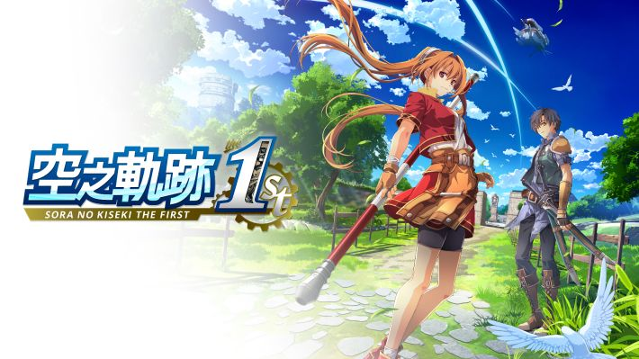

基本資料
- 遊戲類型：日式角色扮演遊戲 (JRPG)
- 創作方式：重製遊戲，源自《空之軌跡 FC》
- 發售日期：2025 年 9 月 19 日 on NS / Steam / PS5
- 破局遊戲時間：50 小時
- 遊戲流程：線性劇情
核心玩法
回合制戰鬥混合少量即時制戰鬥。敵人以明雷方式存在，接近敵人或完成特定劇情能觸發戰鬥。接近敵人會觸發即時制戰鬥，劇情會觸發回合制戰鬥。戰鬥後給予玩家經驗值與裝備碎片。玩家可以透過升級裝備或等級，以推進遊戲進度。最多可以有四個我方角色參與戰鬥。
即時制戰鬥
在大地圖接近敵人時觸發的即時制戰鬥。當主角的等級遠高於敵人時，可以在大地圖中直接攻擊並取勝敵人。也可以擊暈敵人後再進入回合制戰鬥以獲得優勢。
回合制戰鬥
基於速度值的回合制戰鬥。回合開始時，隨機化每個角色的出招順序。角色出招後的下一個出招時間由角色的速度決定。
多巴胺機制
體感上每三到五分鐘玩家的戰鬥力就會獲得有感升級，這是多巴胺的來源。玩家戰鬥後可以獲得經驗值、道具、和裝備碎片，也可以推進劇情。經驗值可以提升玩家戰鬥力，裝備碎片可以製作更強的裝備強化玩家。戰鬥勝利可以推進劇情，新劇情會開啟新地圖、新裝備、新角色，也因此能夠提升玩家戰鬥力。角色之間的配合程度也能提高玩家的戰鬥力。更高的玩家戰鬥力提升了玩家獲得經驗值與裝備碎片的效率。
遊戲動力學 (Game Dynamic)
| 輸入 | 輸出 |
|---|---|
| 體力 | 戰鬥力 |
| 戰鬥力 | 經驗值、道具、裝備碎片、劇情 |
| 經驗值 | 戰鬥力、劇情 |
| 劇情 | 新地圖、新裝備、新角色、金錢（大量） |
| 金錢 | 新道具、新裝備 |
| 裝備碎片 | 新道具、金錢（少量） |
| 角色搭配 | 戰鬥力 |
戰鬥力動力學
數值列表
- 生命值
- EP 值（魔法）
- CP 值（物理）
- 速度
- 魔法出招速度
- 物理攻擊力
- 物理防禦力
- 物理命中率
- 物理迴避率
- 霧裡爆擊率
- 魔法攻擊力
- 魔法防禦力
- 魔法命中率
- 魔法迴避率
- 魔法爆擊率
輸出手段：攻擊力 x 命中率 x 爆擊率 x 速度 x 出招速度 x buff
威脅： \((\text{已消耗 EP 值} \cup \text{已消耗 CP 值} \cup \text{已消耗生命值}) \times \text{異常狀態} \times \text{debuff}\)
比較可惜的地方是角色之間的配合方式存在最佳解，提高速度，避免被延遲的收益似乎大於其他的屬性。讓角色分別負責控場、補血、嘲諷、遠程；回合制戰鬥的手法是 buff > 補血 > 擊暈 > buff > ... 幾乎是勝利方程式。只要玩懂了就會覺得無聊。但差不多第 30 個小時才能玩懂這套機制。
套路
- 為了凸顯主角成長的理由，父親總是缺席。
- 女主角是有男孩子氣的女孩子，這在 2000 年前後特別流行。
- 劇情內建謎語人系統。敵知我知，就玩家和艾斯蒂爾不知道幕後黑手是誰。
- 角色不能跳躍，我猜是為了節省除錯成本。
反套路
- 捏他《刺激 1995》
- 約書亞和艾斯蒂爾的第一次分手
小結
這次重製的是軌跡系列的第一部作品。登場的主要角色有 8 位，每一位都有充足的時間塑造角色記憶點。核心玩法以 2026 年的標準看有一點老套，但勝在多巴胺機制做得好，實際上還是好玩。